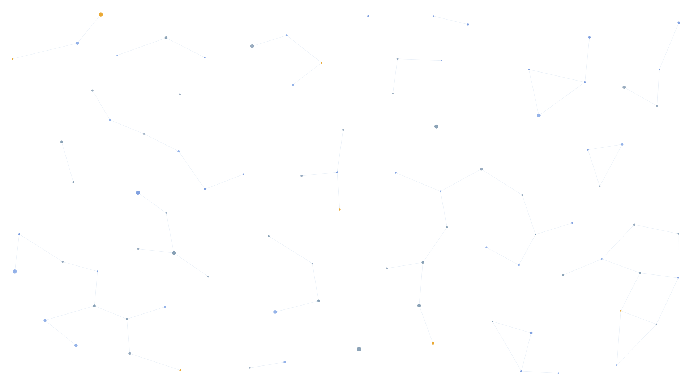
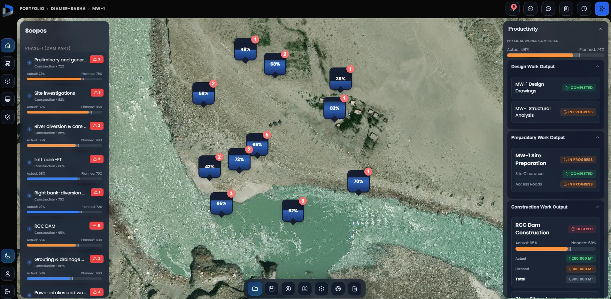
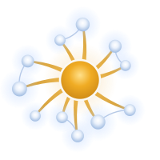

The world needs a new way to build.
We can’t house, power and connect eight billion people with the fractured way the world builds today. Indus is rebuilding it from the ground up — a single operating system where every part of a project connects, so the project itself can think and act.

We built the world. But never built the machine that builds it.
Roads, dams, cities, power plants, buildings — every physical thing around us was delivered by engineering and construction. It is the largest industry on earth: $15 trillion a year. And its greatest work is still ahead — the build now coming is the largest in the history of human civilisation.
What keeps us up at night is one question: how will the world deliver it? The industry carrying humanity’s future still fights the battles it has always fought — productivity stalled for decades, cost and schedule overruns the norm rather than the exception, quality failures still making headlines.
The answer is not another tool on the pile. The industry has thousands of tools — each holding a fragment of the project. What’s missing is the machine: an operating system, one place where every part of a project connects, understands itself, and acts. Connect the work, and it begins to think.

DiPGOS Project operating systemYour whole project, running as one system.
The first system built to run the work itself — connecting every signal, reasoning over the whole, and turning your project into one that can think and act.
The command centre — not a dashboard.
The operational command centre your team runs the work from, and takes decisions in. One place: where the work stands, what it’s made of, and how it’s performing.
needs owner input[Shown live on the Diamer-Basha Dam project]
Navigate — where, what & how
-
Where — the live map, the epicentre of activity.
-
What — scope, blocks and work fronts.
-
How — productivity, quality and safety.
The whole project, navigable from one place.
needs owner input[Shown live on the Diamer-Basha Dam project]
Action & command
Approve, escalate, change, resolve — every action taken inside the system, in context, on the record. Alarms, decision engine, change manager, notifications, collaboration — command lives where the work lives.
Decision intelligence
Your knowledge repository — historic projects and contracts — reasoned against the live operation the moment a decision is made.
How it thinks
A living loop runs continuously over the work. Each turn makes the next sharper — the project learns as it is built.
- 01
Sense
Read the project’s true state from the ground, live.
- 02
Understand
Set it against what you know and the science of the work.
- 03
Foresee
See what’s coming before it lands on the programme.
- 04
Adapt
Reshape the plan against the live operation.
- 05
Act
Put the call in front of the right person, and move.
Every function, on one live picture of the work.
Today each function runs in its own tool, blind to the rest. In DiPGOS they all run on one live picture of the job — so schedule, cost, supply chain, quality and safety finally move together.
Functions that run themselves — driven by the work, approved by you.
Autonomous scheduling
The plan drives itself off the live process.
Finance
Cost and value move with the work.
Supply chain
Materials sequenced to the real plan.
Risk management
Exposure caught before it bites.
Resource manager
People and plant, put where they pay.
Document manager
The right revision, tied to the work.
The foundation
Operational management
How the work is actually going, on the ground — captured live, where delivery is won or lost.
- Productivity
- Quality
- Health & safety
The intelligence does the heavy lifting; you approve. Every function runs itself — and you stay in command.
AI can only act on ground it understands. We build the ground.
Applied AI — human in command
AI does the heavy lifting; your engineers stay in command.
Semantic & knowledge layer
The meaning and context of your project.
Operational relationships
How work sequences, depends and constrains.
Physics & operational sciences
How things really behave on the ground.
Everyone is racing to put AI to work. But an agent is only as good as what it understands — and in construction, that understanding never existed.
DiPGOS builds the layers AI must stand on: the meaning, the relationships, the operational sciences and the physics of the work. Give AI that ground, and it can finally reason and act on real projects.
Electricity. The internet. AI. The value was never in the raw technology — it was in the application layer built on top. We are that applied layer for engineering & construction.
We lived the problem before we built the answer.
Indus is built by engineers and builders who spent their careers inside real projects — feeling the gridlock first-hand. We’re not software people guessing at the industry. We’re industry people building the system we always needed.
Founded by
M. Kamran Basit
Founder & CEO
- [20+ years]
- [delivering hydropower & infrastructure]
- [N projects]
- [run on DiPGOS]
- [Diamer-Basha Dam]
- [flagship project, live in the command centre]
- [Islamabad · USA]
- [offices]